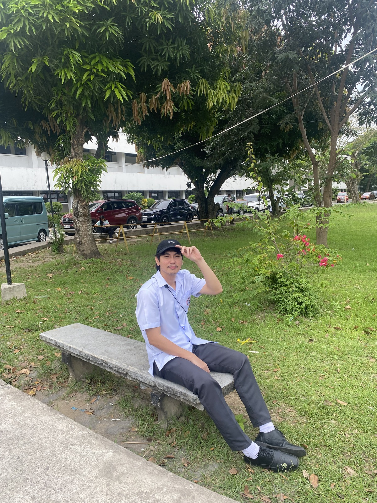

Between the lines,
a world unfolds.
Eight masterpieces. Countless perspectives.
Reflections on courage, character, and the human condition.
A collection of enduring ideas.
Familiar stories, seen through a different lens. Pick a book and step inside.

THINKER.
Always curious.
Shan Paul S. Bermudo.
Every good book leaves a little of itself with us. This is a space for the questions, connections, and discoveries that stay long after the last page.
From imagined worlds to everyday life, literature offers a chance to look closer, listen more carefully, and understand a perspective beyond our own.
To read with curiosity, question with care, and discover how stories from different times still speak to the world we live in.
The Little Prince
A gentle reminder that the most important things in life are felt, not seen.
A young traveler leaves his tiny planet and encounters a universe of grown-up priorities. Beneath its simple storytelling lies a thoughtful exploration of friendship, responsibility, and what it means to truly care.
More than stories.
New ways of seeing.
Literature opens a window into other lives—and a mirror to our own. These are the skills and perspectives a Great Books journey can nurture.
What remains
after the last page.
The most meaningful part of reading is what it changes in us. A space to pause, look back, and connect the journey to what comes next.
Some stories end.
The good ones stay with you.